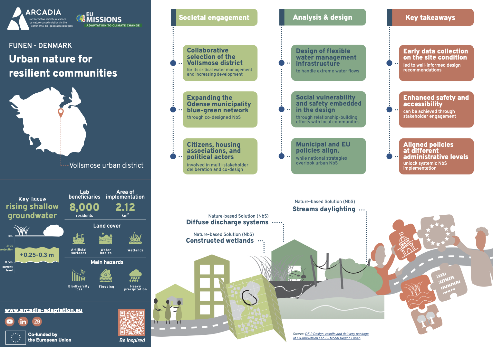
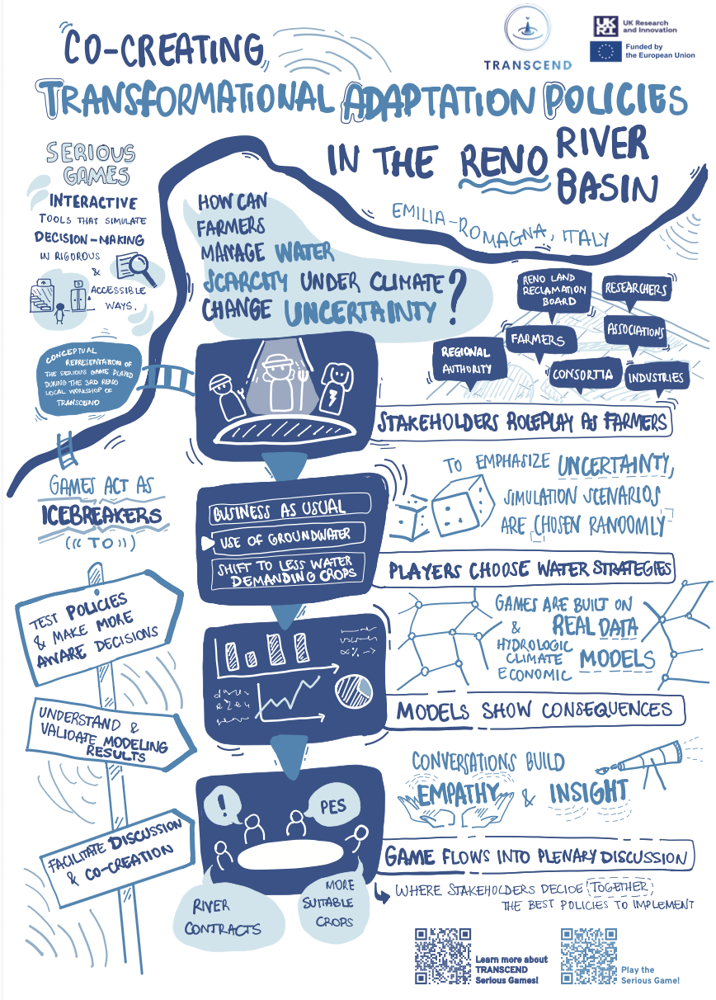
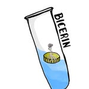

writing · academia
Being Gay in Academia: Unravelling Suffocating Contradictions
November 2023
Client: The PhD Place
Read articlePortfolio
Science communication through visuals, writing, education, training, podcasts, video, and citizen science.
Use your browser's Print command to save as PDF.
writing · academia
November 2023
Client: The PhD Place
Read article

writing · AI, academia
May 2025
Client: Scienzainrete
Author page
podcasts · academia
June 2025
An episode about psychologist Diederik Stapel, whose fabricated research undermined his studies on discrimination and stereotypes.
Client: SISSA
Listen to episode


writing · academia, AI
August 2025
Client: ICTP
Read article
writing · mathematics, physics, academia
August 2025
Client: ICTP
Read article
writing · mathematics, academia
August 2025
Client: ICTP
Read article
video · physics, academia
August 2025
Interviews ICTP Diploma student Komal Rubab about quantum mechanics, entanglement, spin systems, and her plans to pursue a PhD at SISSA.
Client: ICTP
Read article
writing · physics, academia
August 2025
Client: ICTP
Read article
writing · academia, history
September 2025
Client: Aula di Scienze
Read article
writing · mathematics, AI
March 2026
Client: Aula di Scienze
Read article
education · mathematics
March 2026
A series of workshops on statistics and data visualization for high schoolers.
Client: Liceo Artistico Statale Nordio

writing · mathematics
June 2026
Client: Aula di Scienze
Read article


visuals · bioinformatics
June 2026
A data-driven thesis cover illustrating how mutations appear and interact within a tumour.
Client: QBio
View project


visuals · climate
July 2026
Client: CMCC

writing · mathematics, physics, AI
October 2026
Client: Aula di Scienze
Read article
visuals · climate
October 2026
Client: CMCC

citizen science · bioinformatics, plastics
November 2026
Studies fungal communities found on plastic materials through a citizen-science approach. The project invites public participation to document these communities and explore how fungi interact with plastics.
Client: MIRRI-IT
Visit Instagram
visuals · bioinformatics
September 2026
Cover illustration for a study on gut microbiome profiling and multiple sclerosis, selected for an eBioMedicine issue.
Client: QBio
View project
video · AI, bioinformatics
July 2026
Short video interviews with researchers introducing ON-AIR, a project on artificial intelligence and integrated omics for precision oncology.
Client: QBio
View project
podcasts · mathematics
June 2024
First-season podcast conversations with early-career researchers about the stories behind mathematics.
Client: MMünster
View project
training · mathematics
October 2026
A workshop for early-career mathematicians on science communication, story structure, and applying storytelling to mathematical research.
Client: MMünster
View project